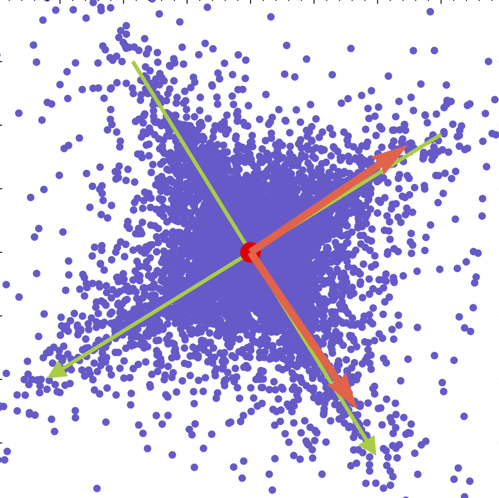
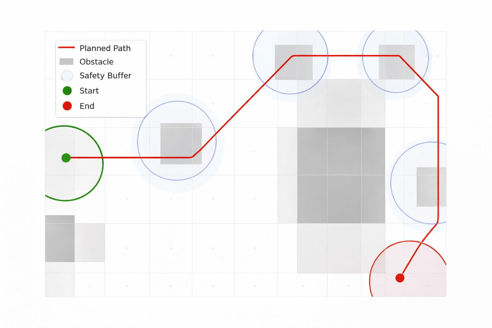
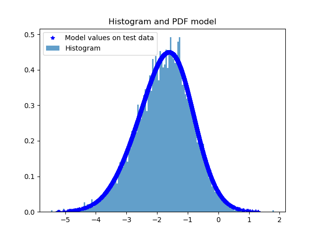

About
I am a Ph.D. Candidate in Applied Mathematics and Statistics at Johns Hopkins University, advised by Mateo Díaz and Soledad Villar. My research sits at the intersection of optimal transport, Riemannian optimization, and manifold learning. Beyond research, I dedicate time to teaching and mentoring. My interests extend to cycling, artisanal coffee, and anime/tv-shows.
Bio
I obtained a M.Sc. in Applied Mathematics and Statistics from Johns Hopkins University in 2024, and a M.Sc. in Mathematics from the Universidad Nacional de Colombia in 2020, where I worked on spectral geometry and noncommutative geometry under the supervision of Prof. Sylvie Paycha and Prof. Carolina Neira Jiménez. During the latter, I did a research internship at the Institute fur Mathematik of the Universität Potsdam. I also worked as a Machine Learning Engineer at Vozy, a Latin American startup specializing in conversational AI.
News
Upcoming Course on Geometric Data Science at UNAL Bogota (in Spanish)
Register in the link: https://ciencias.bogota.unal.edu.co/educacion_continua/cursos_diplomados_eventos/curso-de-pensamiento-geometrico-para-machine-learning-y-ciencias-de-datos/
Poster Presentation
Presenting work on estimation of Morse information on manifolds at the Statistics and Data Science Workshop, Universidad de Los Andes.
Optimization and learning: theory and applications, Montreal, Canada.
Projects

Geometric Factor Analysis
Uncovering latent factors in data by mapping onto optimized orthogonal reference frames in the Stiefel manifold, combining optimal transport with Riemannian optimization to address rotational ambiguity in high-dimensional factor models.

Vision Guided Drone
Mentored a team of three high school interns at Johns Hopkins University in developing an autonomous drone navigation system using computer vision and optimization techniques for safe and efficient flight path planning.

Qudost
Advances density estimation by transforming it into a supervised learning problem, enabling real-time inference via universal approximation. Research conducted at the Johns Hopkins University Applied Physics Laboratory.

VoBio
Voice biometrics authentication system developed in PyTorch and TensorFlow, one of the first of its kind deployed for corporate use in Latin America. Integrated into Vozy's client authentication framework with real-time inference capabilities.
Blog
Understanding Factor Analysis Through Geometric Lenses
Exploring the intersection of geometry and statistical analysis to uncover hidden patterns in high-dimensional data structures.
Read more →Publications
Teaching
Johns Hopkins University
- AMS 625: Machine Learning 2 · Spring 2025 (Teaching Assistant)
- AMS 620: Machine Learning 1 · Fall 2024, Fall 2023 (Teaching Assistant)
- AMS 660: Nonlinear Optimization 2 · Spring 2024 (Teaching Assistant)
- Directed Reading Program · Fall 2024 — Geometry of the Space of Probability Distributions (Mentee: Shayaan Emran) (Mentor)
- Directed Reading Program · Spring 2024 — Symmetries and Representations (Mentee: Minjae Kim) (Mentor)
- Directed Reading Program · Fall 2023 — Spectral Geometry on Triangles (Mentee: Sukriti Gupta) (Mentor)
Universidad Nacional de Colombia
- Cálculo Diferencial (Calculus 1) · 2018-2, 2019-1 (Instructor)